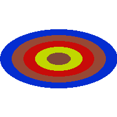

Ellipse()
语法
Ellipse(x, y, RadiusX, RadiusY [, Color])概要
Draw an ellipse in the current drawing output. 使用 DrawingMode()函数设置填充模式。开始绘制前使用 StartDrawing()设置当前输出。
参数
x, y The position of the center pixel of the ellipse. RadiusX, RadiusY The radius of the ellipse in the x and y direction. The center pixel is not included in these values. Color (optional) The color to be used for the ellipse. 如果未指定此参数，将使用与FrontColor()设置的默认颜色。这种颜色可以使用RGB或RGBA格式。
返回值
无.
示例
If OpenWindow(0, 0, 0, 200, 200, "2DDrawing Example", #PB_Window_SystemMenu | #PB_Window_ScreenCentered) If CreateImage(0, 200, 200) And StartDrawing(ImageOutput(0)) Box(0, 0, 200, 200, RGB(255, 255, 255)) For radius=50 To 10 Step -10 Ellipse(100, 100, radius*2, radius, RGB(Random(255), Random(255), Random(255))) Next radius StopDrawing() ImageGadget(0, 0, 0, 200, 200, ImageID(0)) EndIf Repeat Event = WaitWindowEvent() Until Event = #PB_Event_CloseWindow EndIf

参阅
Box(), RoundBox(), Line(), Circle() FrontColor(), RGB(), RGBA(), DrawingMode()
已支持操作系统
所有